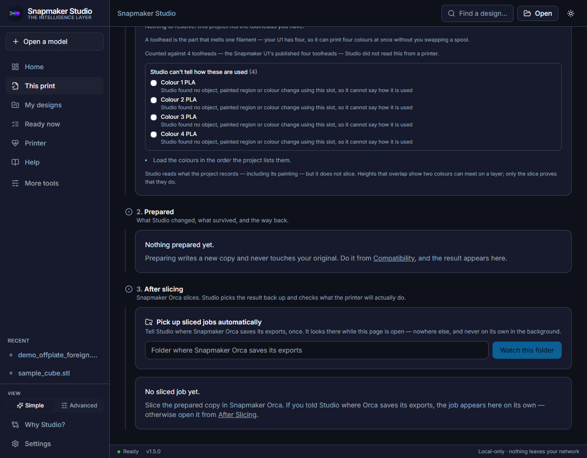
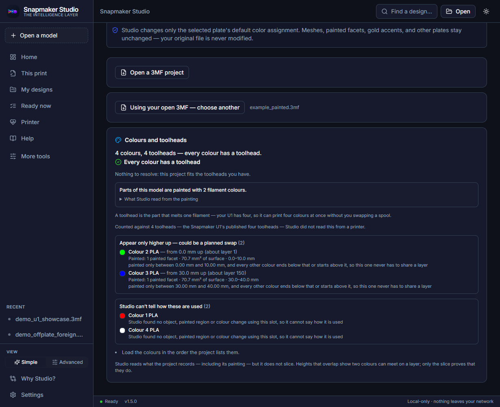

Friendly first-run tour
From download to a checked, sliced job
Snapmaker Studio checks a model and your Snapmaker U1 before a layer is sliced, prepares a safe U1 copy, hands it to Snapmaker Orca, and checks the sliced job when it comes back. This tour walks you through it, one lesson at a time.
Guide for Studio v1.5.0 (current stable release) · Windows and Linux · about 45 minutes for the whole tour
Snapmaker Studio is an independent open-source project — not affiliated with or endorsed by Snapmaker. “Snapmaker” is a trademark of its respective owner.
JavaScript is off, so every lesson is shown below on one page. Screenshots and their numbered notes are all here as plain text; only the click-through examples need JavaScript.
Ready to get started?
We begin with installing Studio, then open a model, read the checks, prepare a copy for your U1, and bring the sliced job back.
Start the tour →Lesson 1 of 12
1. Install and open Snapmaker Studio
Goal: Studio is installed from the official release, its download is verified, and you are looking at the Home screen.
Jump to the example walkthrough ↓
Before you start
- Windows 10 or 11 (64-bit), or Linux x86_64 with a desktop. Ubuntu 22.04 and 24.04 are the systems Studio's Linux package has been checked on. macOS is not supported.
- Nothing else to install: no Python, Node.js or Rust. There is no account to create.
Steps
- Open the official Releases page (opens in a new tab) and download the Windows installer (
Snapmaker.Studio_<version>_x64-setup.exe) or the Linux.deb. Download only from that page. - Check the download. Compare its SHA256 with the value in RELEASE_METADATA.md (opens in a new tab); that file is the one place the current hashes are kept.
- Windows (PowerShell):
Get-FileHash -Algorithm SHA256 .\<installer>.exe - Linux:
sha256sum <file>.deb - If the two values differ, delete the file and download it again.
- Windows (PowerShell):
- Windows: run the installer. It is not code-signed yet, so Windows SmartScreen may say Unknown publisher. Once the hash matches, choose More info → Run anyway, then start Snapmaker Studio from the Start menu. More detail: Windows install guide (opens in a new tab).
- Linux: run
sudo apt install ./<the .deb file name exactly as shown on the Releases page>, then start Snapmaker Studio from your application menu or runsnapmaker-studio-desktop. More detail: Linux install guide (opens in a new tab). - Studio opens on Home. There is nothing to sign in to.
Swipe sideways to see the whole screenshot, or tap it to enlarge.

What the numbers mean
- Open a modelPress Open a model to pick an
.stlor.3mffile. You can also drag a file onto the window. - Open a model (sidebar)The same button lives at the top of the sidebar, so it is always one click away.
- Simple and AdvancedSimple shows six everyday items. Advanced shows every tool in the sidebar. Switch whenever you like; nothing is lost.
- HelpHelp holds the update check, the support bundle and short pointers to each tool.
- Local onlyStudio runs on your computer. There is no account and nothing is uploaded; this line is always visible.
What you should see
- A dark window with a sidebar (Home, This print, My designs, Ready now, Printer, Help) and a large Open a model button.
- The version number at the bottom of the window reads v1.5.0, and the footer says Local-only · nothing leaves your network.
Linux support is verified by automated installs on clean Ubuntu 22.04 and 24.04 systems. Other distributions and real desktops have not been recorded yet; see the Linux install guide (opens in a new tab) for the current list.
Uninstalling Studio does not delete your project data. On Windows that data lives in %LOCALAPPDATA%\SnapmakerStudio; delete that folder yourself if you want it gone.
Find your way around Home
Click the pulsing numbered circle in each step. Nothing is installed or opened; it is only a picture.
- Find the button that opens a model. Click circle 2. Open a model sits at the top of the sidebar so it is always one click away.
- Find the switch between Simple and Advanced. Click circle 3. Simple shows six everyday items; Advanced shows every tool. You can switch at any time.
- Find where to get help. Click circle 4. Help has the update check and the support bundle (lesson 12).
Swipe sideways to see the whole picture.
This is a picture-based example inside the guide. It never connects to a printer, sends a file or changes anything on your computer.
If this looks different
Windows says “Windows protected your PC”.
That is expected for an installer that is not code-signed yet. It does not by itself mean the file is unsafe, but only continue after the SHA256 matches and you downloaded it from the official Releases page.
The hash does not match.
Do not run the installer. Delete it and download it again from the official Releases page.
Studio looks different from this guide.
This guide describes v1.5.0. Check the version at the bottom of the Studio window. Newer releases may move things; the release notes (opens in a new tab) say what changed.
Lesson 2 of 12
2. Open your first model
Goal: A model is open in Studio and you know what Studio learned from it.
Jump to the example walkthrough ↓
Before you start
- An
.stlor.3mffile. The repository's `examples` folder (opens in a new tab) has two small ones:sample_cube.stlanddemo_offplate_foreign.3mf. This lesson uses the cube.
STL or 3MF? What Studio can learn from each
STL — a shape only
An STL describes a surface and nothing else: no colours, no print settings. Studio measures it and says: “This STL does not include creator slicer settings. Studio will use a U1 starter profile unless you choose another Orca profile.”
3MF — a project
A 3MF can hold the shape and colours, separate parts and often the creator's print settings. Studio can compare those with your U1, point out settings that came from another printer, and keep the creator's settings when it prepares a copy.
Steps
- Press Open a model (top of the sidebar, or the large button on Home), or drag the file onto the Studio window.
- Choose
sample_cube.stl. - Studio opens the Workspace and reads the file on your computer; nothing is uploaded.
- Read the status line under the file name, the verdict banner (Can prepare a U1 copy) and the What's in this design card.
Swipe sideways to see the whole screenshot, or tap it to enlarge.

sample_cube.stl, a 20 mm cube from the repository's examples folder.What the numbers mean
- The open fileThe file name and a one-line status. Studio read the file on your computer; it was not uploaded anywhere.
- The verdictA plain-language verdict with a star rating. It is advice about preparing the file, not a promise about the print.
- Prepare U1 copyWrites a new file with U1 settings. Your original is never changed.
- Your fix planEach step says where it happens: Do this in Studio or Do this in Orca.
- What's in this designWhat Studio measured: kind of file, size, colours, parts and a rough filament cost.
What you should see
- The status line reads Checked — here's what we found. Press Prepare U1 copy when you're set.
- What's in this design says a plain model (STL), 20 × 20 × 20 mm, 0 colors, 0 parts and a rough filament cost. The cost uses a default price per kilo that you can change in Settings → Filament price.
- Nothing has been prepared yet, and your file has not been touched.
Studio shows a rough filament cost from a default price per kilo. It is an estimate for orientation, not a quote.
Open the example cube
Follow the circles through the first minute with sample_cube.stl.
- Start on Home and click circle 1, Open a model. A file picker opens on your computer. You would choose
sample_cube.stl. - Studio now shows the Workspace. Click circle 2 to read the verdict. Can prepare a U1 copy: the file can be prepared. It is advice about preparing, not a promise about the print.
- Click circle 5 to see what Studio measured. A plain STL model, 20 × 20 × 20 mm, no colours, no parts, and a rough filament cost.
Swipe sideways to see the whole picture.
This is a picture-based example inside the guide. It never connects to a printer, sends a file or changes anything on your computer.
If this looks different
Nothing seems to happen after choosing a file, or the page says “Couldn’t read that file”.
The file may be damaged or may not really be an STL or 3MF. Download it again.
Open Compatibility (lesson 4). For a damaged 3MF it says Studio could not open this file as a 3MF project. The Workspace can look normal for such a file, so check Compatibility if something seems off.
My own model shows different numbers.
That is expected: the numbers describe your file. Only the example cube is exactly 20 mm.
Lesson 3 of 12
3. Understand “This print”
Goal: You can tell where you are in the job, what Studio knows and what to do next.
Jump to the example walkthrough ↓
Before you start
- A model open in Studio. This lesson uses
demo_offplate_foreign.3mffrom the examples (opens in a new tab).
Steps
- Open This print in the sidebar (it is called This Print in Advanced view).
- Read the page title, This print — your file name. Everything on the page is about that one job.
- Stage 1. Before slicing: Object placement, Before you slice and Colours and toolheads. These compare the project with the printer Studio can see.
- Stage 2. Prepared: until you prepare a copy it says Nothing prepared yet. After you prepare one, this stage shows what changed (lesson 6).
- Stage 3. After slicing: where the sliced job comes back (lesson 9).
- Switch the sidebar between Simple and Advanced with the View toggle at the bottom, or under Settings → Mode. Simple lists Home, This print, My designs, Ready now, Printer and Help, with the rest under More tools; Advanced lists everything.
Swipe sideways to see the whole screenshot, or tap it to enlarge.

What the numbers mean
- One job, one pageThe page is named after the open file and follows that one job from download to ready-to-send.
- Stage 1: Before slicingWhat the project is and how it compares with the printer Studio can see.
- Object placementWhere the objects sit on the plate, with a fix when one is needed.
- Before you sliceCompares the project with your printer. With no printer connected, each answer is honestly marked Studio can’t tell.
- Colours and toolheadsHow many colours the project uses against the U1's four toolheads.
Swipe sideways to see the whole screenshot, or tap it to enlarge.

What the numbers mean
- Stage 2: PreparedAfter you prepare a copy, this stage shows what changed, what survived and the way back to your original.
- Stage 3: After slicingSnapmaker Orca slices. This stage picks the result back up and checks what the printer will actually do.
- Watch this folderOptional: tell Studio where Orca saves its exports and it looks there while this page is open, never in the background.
Swipe sideways to see the whole screenshot, or tap it to enlarge.

What the numbers mean
- View toggleSwitch between Simple and Advanced here, or under Settings → Mode.
- CompatibilityThe full list of checks for a 3MF, and the Prepare U1 copy controls. After Slicing sits just below it (lesson 9).
- Colors & MaterialsColour and toolhead planning, Plate Color Remap and Project Materials (lesson 7).
- Printer HubConnect to your U1 and read its live state (lesson 10).
What you should see
- Three numbered stages, top to bottom, in the order a job actually happens.
- With no printer connected, checks that need a printer say Studio can’t tell instead of guessing. That is correct, not an error.
“Studio can’t tell” means Studio has no way to read that fact from your printer. It does not mean your printer cannot do it. Those are the items to check yourself.
Follow one job through This print
Click each pulsing circle to step through the three stages.
- Click circle 2, stage 1. Before slicing compares the project with the printer Studio can see right now.
- Click circle 4, Before you slice. With no printer connected, each answer is marked Studio can’t tell, and each says what to do.
- Scroll down. Click circle 1, stage 2. Prepared stays empty until you prepare a copy. Preparing never touches your original.
- Click circle 2, stage 3. After slicing is where Snapmaker Orca's result comes back for checking. Studio does not slice.
Swipe sideways to see the whole picture.
This is a picture-based example inside the guide. It never connects to a printer, sends a file or changes anything on your computer.
If this looks different
The page says “Open a model to start”.
No project is open. Press Open a model, or open one from My designs.
Cards show “Checking…” for a while.
Studio first tries to reach a printer. When none answers, the cards switch to Printer not found and Studio can’t tell. This can take a little while.
I cannot find a tool the guide mentions.
You are probably in Simple view. Open More tools, or switch to Advanced with the View toggle.
Lesson 4 of 12
4. Read the checks
Goal: You can tell a problem that needs attention from a heads-up, and both from something Studio cannot know.
Jump to the example walkthrough ↓
Before you start
demo_offplate_foreign.3mfopen (lesson 3).
The labels you will meet
NEEDS ATTENTION
Something in the project is likely to cause trouble in Orca. For a downloaded project it often means settings from another printer; the model itself may be fine.
HEADS UP
Worth knowing. Often a thing Studio cannot verify, such as object-to-object spacing.
STUDIO CAN’T TELL
Studio cannot read this from your printer. Check it yourself; the card says how.
LOOKS RIGHT
Studio checked and found nothing wrong. It is still advice, not a guarantee.
Steps
- Open Compatibility: in Advanced view it is in the sidebar, in Simple view it is under More tools, or press Open the full checks on This print.
- Read Object placement first. The example says 1 object is outside the U1's printable area. and names the object and the distance.
- Scroll to the summary, for example Found 5 invalid-value issue(s) and 2 warning(s). Each card has a label, an explanation and a Do this: line.
- Read each Do this: line. Open Technical detail only if you are curious; you never need it to follow this guide.
- Notice the banner on the Workspace (Needs a fix first or Can prepare a U1 copy). It summarises the checks; it is not a verdict on the print.
Swipe sideways to see the whole screenshot, or tap it to enlarge.

What the numbers mean
- Compatibility DoctorA read-only check of a 3MF for common U1 and Snapmaker Orca problems. It never edits your file.
- The placement findingStates the problem in plain words: one object is outside the U1's printable area.
- Move onto the plateSaves a new file with every object shifted onto the plate. Your original stays as it was.
- Before you sliceCompares the project with the printer Studio can see right now.
Swipe sideways to see the whole screenshot, or tap it to enlarge.

demo_offplate_foreign.3mf.What the numbers mean
- The summaryHow many problems and warnings Studio found in total.
- NEEDS ATTENTIONSomething in the project is likely to cause trouble in Orca. It does not always mean the model is bad.
- Do thisEvery finding ends with a concrete next step you can act on. Expand Technical detail under a card for the exact setting names; you never need it to follow the guide.
What you should see
- A list of cards, each with a label, plain-language text and a next step.
- For the example: a placement finding with a Move onto the plate (saves a copy) button, several NEEDS ATTENTION findings about settings from another printer, and HEADS UP findings such as Profile may not be a Snapmaker U1 profile.
The checks are read-only. Studio never edits your file while diagnosing it.
Studio does not yet check spacing between objects in a multi-part layout. It says so, and tells you to use Arrange and watch for collision warnings in Snapmaker Orca.
Read a finding
Click through one placement problem and two findings.
- Click circle 2, the placement finding. One object is outside the printable area, and the card names the object and the distance.
- Click circle 2, a NEEDS ATTENTION card. This file likely carries settings from another printer. The text says the model may be fine; the project settings are the problem.
- Click circle 3, the Do this line. A concrete next step, such as importing the model into a clean U1 project, or preparing a U1 copy.
- Last, click circle 4 on This print. Anything that needs a printer is marked Studio can’t tell. You check those yourself.
Swipe sideways to see the whole picture.
This is a picture-based example inside the guide. It never connects to a printer, sends a file or changes anything on your computer.
If this looks different
The findings say “Invalid value for …”. Is my model broken?
Usually not. The text says the model may be fine and the project settings are for another printer. Preparing a U1 copy is designed for exactly this.
My findings differ from the example.
They describe your own file, so they will differ. The labels mean the same thing.
Lesson 5 of 12
5. Fix placement and prepare a U1 copy
Goal: The off-plate object is back on the plate in a new copy, and a U1 copy has been prepared from it.
Jump to the example walkthrough ↓
Before you start
demo_offplate_foreign.3mfopen. In the example, the second object hangs 55 mm past the right edge of the plate.
Steps
- On Compatibility, This print or the Workspace, find Object placement: Object 2 · 20 × 20 × 20 mm — Hangs 55.0 mm past the right edge.
- Press Move onto the plate (saves a copy).
- The card turns green: The object sits inside the U1's printable area. with the line 1 object(s) moved onto the U1 plate in a new copy — demo_offplate_foreign_placed_U1.3mf. Your original file was not changed.
- The copy is saved next to your original. Copy file location copies where it is.
- That copy has its objects on the plate but still carries the original's settings. Press Open a model and choose
demo_offplate_foreign_placed_U1.3mf. - On the Workspace, leave Preserve creator settings (marked Recommended) selected and press Prepare U1 copy.
Swipe sideways to see the whole screenshot, or tap it to enlarge.

demo_offplate_foreign.3mf, a small project whose second object sits off the U1's plate.What the numbers mean
- Preparation modeA 3MF can carry the creator's print settings. This card decides what Studio does with them.
- Preserve creator settingsRecommended for a downloaded model: it keeps the creator's settings and changes only what the U1 needs.
- Prepare U1 copyCreates the new file using the mode you chose.
- Object placementNames the object, the edge and the distance when something sits off the plate. The fix button is just below.
Swipe sideways to see the whole screenshot, or tap it to enlarge.

What the numbers mean
- The check now passesThe object sits inside the printable area. Studio re-checked the file it actually wrote and names the new copy; your original file was not changed.
- Copy file locationCopies the new file's location so you can open it in Studio or in Orca.
Swipe sideways to see the whole screenshot, or tap it to enlarge.

What the numbers mean
- U1 copy createdThe new file has been written and checked for structure. Studio never writes to your original; the copy is a separate file next to it.
- What now?Open the copy in Snapmaker Orca with one click, or copy its path and open it from Orca yourself.
- Open in Snapmaker OrcaA one-way handoff: Studio opens the prepared file in Orca and does nothing else. If Studio cannot find Orca, this button reads Install Snapmaker Orca.
- What happens nextSlice in Snapmaker Orca, export the
.gcodefile, then bring it back (lesson 9). Studio does not slice.
What you should see
- A banner reading U1 copy created — review setup before slicing, saying your original file is not modified.
- New files beside your original:
demo_offplate_foreign_placed_U1.3mf(the moved copy) anddemo_offplate_foreign_placed_U1_SnapmakerU1.3mf(the prepared copy). You may also see a file ending in.orig.3mf: an untouched snapshot Studio keeps next to a prepared copy. - If you open the prepared copy, Object placement now says the object sits inside the printable area.
The three preparation modes
Preserve creator settings (Recommended)
Keeps the print looking the way the creator intended, and changes only the minimum needed for Snapmaker Orca to open it. The right choice for a downloaded model.
Use Studio's U1 starter settings instead
Replaces the creator's print settings with Studio's U1 defaults. Speed, temperature, retraction, supports and cooling will change. Useful when the file was made for a very different printer.
Custom — Review settings
Review the settings yourself before preparing.
Moving and preparing both write new files. Your original is never modified, and the moved copy changes only where the objects sit: layout, rotation, scale and height stay as the creator set them.
Move onto the plate and Prepare U1 copy are two separate actions. Moving writes a repositioned copy; to get a U1 copy that is also on the plate, prepare the moved copy as in steps 5 and 6. Preparing the original on its own does not move anything, and the result still says print-setup risks remain.
Fix placement, then prepare
A five-step example of the whole fix. Nothing is written; it only moves between pictures.
- Click circle 4, Object placement. One object hangs 55.0 mm past the right edge.
- Click circle 3, Move onto the plate (saves a copy). Studio writes a new file with every object shifted onto the plate.
- Click circle 1 to read the result. The object was moved in a new copy, and your original file was not changed. Open that copy next.
- With the moved copy open, click circle 3, Prepare U1 copy. Studio prepares a U1 copy using Preserve creator settings.
- Click circle 1 to confirm the result. U1 copy created, and your original is untouched. Next, review what changed.
Swipe sideways to see the whole picture.
This is a picture-based example inside the guide. It never connects to a printer, sends a file or changes anything on your computer.
If this looks different
There is no Move onto the plate button.
Either every object is already on the plate, or one move cannot fix the layout. The card then says so and tells you to open the project in Snapmaker Orca and use Arrange.
The prepared copy still shows warnings.
Studio prepares the file for the U1; it does not fix every setting. Read the remaining findings and the Your fix plan list, which marks each step Do this in Studio or Do this in Orca.
I do not know which file is which.
The names say it: …_placed_U1 was moved, …_SnapmakerU1 was prepared, and your original keeps its own name.
Lesson 6 of 12
6. Review what changed
Goal: You can say what Studio kept, what it changed, what it could not carry over and what it could not check.
Jump to the example walkthrough ↓
Before you start
- A prepared copy (lesson 5).
Steps
- After preparing, scroll to What survived preparing this copy. The example says 14 kept · 2 changed; your counts will differ.
- Expand What Studio changed (n), then What stayed the same (n).
- Scroll to Changes Studio made. Each numbered action shows how many changes it made, that the structure was validated, and the file it produced. Before and after shows exact values.
- Look further down for Kept from the original file (for example 533 creator settings kept), Adjusted for U1 project compatibility, and Optional recommendations (not applied).
- If you want to go back, Return to the original points Studio at your untouched file. The copy stays on disk.
Swipe sideways to see the whole screenshot, or tap it to enlarge.

What the numbers mean
- What survived preparing this copyA before-and-after comparison of everything Studio can identify in the two files, with the counts of what was kept and what changed (here 14 kept · 2 changed).
- What Studio changed, and what stayedExpand What Studio changed to see each change; nothing is changed silently. What stayed the same lists what was carried over untouched.
- Changes Studio madeA numbered ledger of each action, with the file it produced and a Before and after view.
- Return to the originalPoints Studio back at your untouched original. The copy stays on disk.
What you should see
- A before-and-after comparison. Settings Studio could not carry over appear under What Studio could not carry over, and anything it could not identify is listed as unverified rather than assumed to be fine.
- Optional recommendations stay not applied unless you choose them.
Return to the original never writes to your original. Everything Studio makes is saved as a new file.
“Unverified” is a real answer. When Studio cannot identify something in both files it says so instead of calling it fine.
Review a prepared copy
Click through what a prepared copy tells you.
- Click circle 1, the survival report. A comparison of everything Studio can identify in the original and the copy, with how many settings were kept and how many Studio changed.
- Click circle 2, What Studio changed. Expand it to see each change. Nothing is changed silently.
- Click circle 3, the ledger. A numbered list of actions, each with the file it produced and a Before and after view.
- Click circle 4, Return to the original. Studio points back at your untouched file; the copy stays on disk.
Swipe sideways to see the whole picture.
This is a picture-based example inside the guide. It never connects to a printer, sends a file or changes anything on your computer.
If this looks different
My numbers differ from the guide.
They describe your file. The structure of the report is the same.
I want to undo a preparation.
Your original was never changed, so there is nothing to undo. Delete the copy if you do not want it.
Lesson 7 of 12
7. Plan colours and materials
Goal: You know whether your colours fit the U1's four toolheads and, if you track spools, which spool and Orca preset each colour maps to.
Jump to the example walkthrough ↓
Before you start
- A multi-colour project open. This lesson uses
demo_u1_showcase.3mffrom the examples (opens in a new tab).
Steps
- Open Colors & Materials (Advanced sidebar, or More tools).
- Read Colours and toolheads. The example says 6 colours, 4 toolheads — possible without repainting.
- Read the groups: Not proven separable — reserve a toolhead each, Appear only higher up — could be a planned swap, and Studio can’t tell how these are used.
- For a painted project, a box says how many filament colours the painting uses. Expand What Studio read from the painting for the measurements.
- To change one plate's colour, use Plate Color Remap at the top of the same page: Open a 3MF project, choose the plate (the buttons are labelled Plate 1, Plate 2 and so on), choose the colour to replace and the colour to use, press Preview changes, then Create remapped copy — original stays unchanged.
- Optional, if you use a spool tracker: open Compatibility and read Project materials (below).
Swipe sideways to see the whole screenshot, or tap it to enlarge.

What the numbers mean
- Plate Color RemapChanges one plate's colour in a verified copy. Your original is never changed.
- The verdictThe count of colours against toolheads, in one sentence.
- What a toolhead isA toolhead melts one filament. The U1 has four, so it can print four colours at once without a spool swap. Studio counted against the U1's published four toolheads; it did not read this from a printer.
Swipe sideways to see the whole screenshot, or tap it to enlarge.

What the numbers mean
- Painted colour foundStudio read the painting stored in the project and tells you how many filament colours it uses. Expand What Studio read from the painting for the measurements; they are hidden by default.
Swipe sideways to see the whole screenshot, or tap it to enlarge.

What the numbers mean
- Project materialsAppears on the Compatibility page whenever the project has filament slots. It never chooses for you.
- A suggested spoolEach slot shows what the project asks for (material, colour, and the grams when the file states it). Studio lists up to three spools from your inventory and says why. Pick the one that is physically in your hand.
- The Orca presetChoose an installed Snapmaker Orca preset yourself, or keep the project's own filament.
Swipe sideways to see the whole screenshot, or tap it to enlarge.

What the numbers mean
- Review before preparingA plain-language list of exactly what will change. Spool details are labelled as what you selected.
- Prepare with these choicesWrites the new copy. Nothing is written until you press this.
- Back to choicesReturn and change anything. No file has been written yet.
What you should see
- A plain sentence comparing your colours with the four toolheads, then the reasons.
- A closing line: Load the colours in the order the project lists them.
Assigning a colour is not loading filament
In Studio
Studio reads which colour each part of the project uses and plans toolheads. It can write a chosen colour into a new copy.
At the printer
Putting the right filament in the right toolhead is a physical job only you do. Studio never loads, swaps or changes spools, and it never writes to your spool tracker.
The number four comes from the U1's published four toolheads. Studio says it did not read it from a printer.
Project Materials does not create custom Orca presets, choose a spool for you, write to your spool provider, or promise that Orca applies a preset you made yourself.
Optional tools — pick the one you need
Project Materials (v1.5)
You track spools in Spoolman, SpoolEase or Bambuddy and want each colour tied to a real spool and an installed Orca preset.
- Set a provider once in Settings → Materials provider (optional; without one you can still choose presets).
- On Compatibility, find Project materials. For each slot Studio lists up to three spools with reasons. No spool is selected for you.
- Select the spool that is physically in your hand, then press Use this preset (the suggestion) or Choose an installed preset, or Keep project's filament.
- Press Review & prepare, read the review, then Prepare with these choices.
- Tick Remember this mapping if you want it reused. It is saved only after the copy is written, and checked again every time.
Orca's own installed presets can be checked against the U1 and your nozzle and are shown as Proven. Presets you made yourself are shown as Confirmed by you and Manual check in Orca required: Studio cannot confirm Orca applies their temperature, flow and cooling, so check the filament in Orca before slicing. If two slots share one preset but disagree about vendor or type, Studio stops with Prepare stopped and explains why.
Plan colours, then choose a spool
Click through the colour check and the first Project Materials choices.
- Click circle 2, the verdict. 6 colours on 4 toolheads: possible without repainting, because some colours only appear higher up and can be planned swaps.
- Click circle 3 to see what a toolhead is. A toolhead melts one filament. The U1 has four, so it can print four colours at once.
- Click circle 2, a suggested spool. Studio says why it suggested the spool. You pick the one that is physically in your hand.
- Click circle 3, the Orca preset area. Nothing is chosen yet. Use this preset, Choose an installed preset and Keep project's filament are your options.
- After choosing, click circle 1, the review. A plain list of what will be written. Press Prepare with these choices only when it looks right.
Swipe sideways to see the whole picture.
This is a picture-based example inside the guide. It never connects to a printer, sends a file or changes anything on your computer.
If this looks different
Colours are listed under “Studio can’t tell how these are used”.
The project does not say which object, painted region or colour change uses that slot. Load the colours in the order the project lists them, and check in Orca.
There are no spool suggestions.
No provider is set up, or none matches the material. You can still choose an installed preset for a slot, or keep the project's filament.
Prepare stopped appears.
Two slots share one preset but the project declares different vendors or types for them. Choose a different preset for one slot, or remove the declaration in the source project. Studio does not edit it for you.
Lesson 8 of 12
8. Open the prepared copy in Snapmaker Orca
Goal: Your prepared copy is open in Snapmaker Orca, you have reviewed it there, sliced it and exported the G-code.
Jump to the example walkthrough ↓
Before you start
- A prepared copy (lesson 5).
- Snapmaker Orca (opens in a new tab) installed. Studio never slices; Snapmaker Orca does.
Steps
- On the prepared result, press Open in Snapmaker Orca. If Studio cannot find Orca the button reads Install Snapmaker Orca instead; install Orca, or press Copy path and open the file from Orca yourself.
- In Orca, check before slicing: the printer is Snapmaker U1, the filaments and colours match what you will load, the objects are on the plate (use Orca's Arrange if you are unsure), and supports are set the way you want. Studio's Your fix plan marks these as Do this in Orca.
- Slice in Orca (its Slice plate button).
- Export the G-code from Orca and note where it is saved. Orca's menu wording can differ between versions, so use Orca's own export command.
- Keep the exported
.gcode. If you want your Orca settings kept too, also save the project from Orca.
Swipe sideways to see the whole screenshot, or tap it to enlarge.
What the numbers mean
- U1 copy createdThe new file has been written and checked for structure. Studio never writes to your original; the copy is a separate file next to it.
- What now?Open the copy in Snapmaker Orca with one click, or copy its path and open it from Orca yourself.
- Open in Snapmaker OrcaA one-way handoff: Studio opens the prepared file in Orca and does nothing else. If Studio cannot find Orca, this button reads Install Snapmaker Orca.
- What happens nextSlice in Snapmaker Orca, export the
.gcodefile, then bring it back (lesson 9). Studio does not slice.
What you should see
- Orca opens your prepared copy. Studio stays as it was: it does not control Orca and does not slice.
- After slicing you have an exported
.gcodefile ready for lesson 9.
The handoff is one-way. Studio opens the file in Orca and does nothing else with it.
Studio's copy is a starting point. Always review it in Orca before slicing; the report from lesson 6 lists what Studio changed.
From prepared copy to Orca
Three steps in Studio. The slicing itself happens in Snapmaker Orca, which this guide does not simulate.
- Start from the prepared result. Click circle 1. Your U1 copy is ready, and your original is untouched.
- Click circle 3, Open in Snapmaker Orca. In the real app this opens the prepared file in Snapmaker Orca. This example never launches anything.
- Click circle 4 to read what happens next. Slice in Snapmaker Orca and export the G-code. Then return to Studio to check the sliced job.
Swipe sideways to see the whole picture.
This is a picture-based example inside the guide. It never connects to a printer, sends a file or changes anything on your computer.
If this looks different
The button says Install Snapmaker Orca.
Studio did not find Orca. Install it from the releases page (opens in a new tab), then prepare again or use Copy path and open the file from Orca.
Studio says “Couldn’t launch Snapmaker Orca — open the file from Orca instead.”
Open the prepared file from inside Orca. Use Copy path to find it.
Studio says “Couldn’t find the prepared file — try preparing it again.”
The copy was moved or deleted. Prepare it again.
Orca shows a “Customized Preset” notice.
That can happen when the creator's tuned settings are kept. Review the settings in Orca before slicing.
Lesson 9 of 12
9. Bring the sliced job back
Goal: Studio has read your exported G-code and told you what it can confirm and what it cannot.
Jump to the example walkthrough ↓
Before you start
- An exported
.gcodefile from Snapmaker Orca (lesson 8). The pictures here use a small example job written for this guide.
Steps
- Open After Slicing: Advanced sidebar, More tools, or stage 3 of This print.
- Optional: type the folder where Orca saves exports and press Watch this folder. Studio looks there only while this page is open.
- Otherwise drag the
.gcodeonto the window or paste its full path into Open the G-code your slicer produced, then press Check this job. - Read Ready to send? and the findings under it. Each states what Studio found, what to do, and where it came from.
- Read What the printer will actually do: sliced by, for, prints from, layers, estimated time, filament and file.
- Scroll to What to load for what each slot needs, and What happens during this print (Read the whole job) for the job in order.
Swipe sideways to see the whole screenshot, or tap it to enlarge.

What the numbers mean
- Pick up sliced jobs automaticallyOptional. Tell Studio the folder where Orca saves exports, once.
- Watch this folderWhile this page is open, Studio looks in that folder only. It never runs in the background.
- Open the G-codeDrag the
.gcodefile onto the window, or paste its full path. Studio reads it and never changes it. - Check this jobReads the job and compares it with the project and the printer.
Swipe sideways to see the whole screenshot, or tap it to enlarge.

What the numbers mean
- Ready to send?The overall answer, with what is worth settling before you send. It is never a promise that the print will succeed.
- Studio can’t check thisUnknown stays unknown. With no printer connected, anything that depends on the machine is listed here.
- What the printer will actually doFacts read from the sliced file itself (next picture).
- Choose another fileCheck a different job without leaving the page.
Swipe sideways to see the whole screenshot, or tap it to enlarge.

What the numbers mean
- Read from the fileStudio reads these from the G-code itself, then compares them with your printer when one is connected.
- Sliced by and forWhich slicer made the job and which printer it was made for.
- Estimated timeThe slicer's own estimate, not a measurement.
- FilamentHow much material the job expects to use.
What you should see
- An answer such as Nothing blocks this job, but 1 thing(s) are worth settling before you send it.
- Facts read from the file itself, such as Snapmaker Orca 2.3.4, Snapmaker U1, 12 at 0.2 mm and the slicer's own time estimate.
- With no printer connected, anything that depends on the machine reads Studio can’t check this, followed by what to do.
Studio reads the file, not the world. With no printer connected it cannot tell which tools are present, whether the slots are loaded, whether the bed matches or which nozzle is fitted, and it says so.
Studio reads and never changes your G-code, and it never sends anything on its own.
Check a sliced job
An example with a made-up job. Studio is not connected to anything.
- Click circle 3, Open the G-code. You drag in or paste the path of the
.gcodefile Orca exported. - Click circle 4, Check this job. Studio reads the job and compares it with the project and, when connected, the printer.
- Click circle 1, Ready to send?. The overall answer and what is worth settling first. It is never a promise that the print will succeed.
- Click circle 2, Studio can’t check this. Unknown stays unknown: with no printer connected, machine-dependent facts are listed rather than guessed.
- Click circle 1, the facts card. Sliced by, for, prints from, layers, time and filament, all read from the file.
Swipe sideways to see the whole picture.
This is a picture-based example inside the guide. It never connects to a printer, sends a file or changes anything on your computer.
If this looks different
Nothing appears in the watched folder.
Check the folder is the one Orca exports to, and that this page is open. Studio only looks while the page is open. You can always paste the file's path instead.
Studio says it cannot tie the job to my project.
Nothing in either file identifies the model, so Studio cannot tell whether this is the slice of the project you checked. Make sure you picked the right file.
Many items say “Studio can’t check this”.
That is what honest looks like with no printer connected. Connect the printer (lesson 10) or check those items yourself.
Lesson 10 of 12
10. Connect your printer and check readiness
Goal: Studio can read your U1's live state, you know what stays unknown, and you know which actions ask you to confirm.
Jump to the example walkthrough ↓
Before you start
- Your U1 is on, and on the same network as this computer.
- On the U1's touchscreen, Advanced Mode is on under Settings → Maintenance. Studio's own message says the printer's network interface only opens once it is turned on.
Steps
- Open Printer (Simple view) or Printer Hub (Advanced).
- Under Connect to your U1, type the printer's network name (the field starts with
U1.local) or its IP address and press Connect, or press Auto-detect my U1. - To keep the address, set it under Settings → Printer → Network name or IP.
- Read what Printer Hub reports. Anything the printer does not tell Studio says so, for example Nozzle sizes: not reported, instead of being guessed.
- If the printer does not report its nozzles, you can tell Studio what is fitted under Settings → Nozzles. Those entries are labelled Confirmed by you.
- Open Ready now and press Check my library. Studio sorts your library into Needs preparation, Needs attention, Can’t determine, One change away and Ready now.
Swipe sideways to see the whole screenshot, or tap it to enlarge.

What the numbers mean
- Connect to your U1Type the printer's network name or IP address. Studio shows live status and acts only when you confirm.
- ConnectAsks the printer on your own network for its state. Nothing leaves your network.
- Auto-detect my U1Looks for a U1 on your network. If it cannot find one, type the address instead.
- Printer controlsPause, Resume, Cancel print, Upload sliced gcode and Emergency stop live here. Controls stay off until the printer is connected and reachable.
Swipe sideways to see the whole screenshot, or tap it to enlarge.

What the numbers mean
- Network name or IPThe address Printer Hub uses to show live status.
- Printer access and confirmed controlMonitoring is read-only. Send, pause, resume and cancel run only when you confirm them, and Studio never auto-starts a print.
- NozzlesIf the printer does not report its nozzle sizes, you can tell Studio what is fitted. Those entries are labelled Confirmed by you.
Swipe sideways to see the whole screenshot, or tap it to enlarge.

What the numbers mean
- What can I print right now?Sorts your library into Needs preparation, Needs attention, Can’t determine, One change away and Ready now.
- Check my libraryChecks the projects already in your Studio library against your printer's reported state.
- Advisory onlyStudio does not change your printer, slot mapping or inventory.
What you should see
- When your printer answers, Printer Hub shows its live status and the controls become available. When it does not, Controls are off until the printer is connected and reachable.
- Ready now says it is advisory only: it uses your library, your printer's reported state and the filament inventory you configured, and changes nothing on your printer.
What each printer control does
Pause and Resume
Run as soon as you press them. They are reversible.
Cancel print
Asks first: Cancel this print? A cancelled print cannot be resumed.
Upload sliced gcode, then Start this print
You choose the file to upload. Start this print then asks: Start printing this file? Studio does not check the bed for you.
Emergency stop
Asks first. It halts motion and heaters and may need a firmware restart before printing again.
Monitoring is read-only. Studio never starts a print by itself; anything that moves the printer or sends a file happens only when you press the button and confirm.
Studio does not guess. If the printer does not report a fact, it stays not reported until you confirm it, and a fact you confirmed is labelled Confirmed by you.
This guide has no screenshot of a connected printer: no printer was contacted while it was written. The pictures show Printer Hub exactly as it looks before a printer answers.
Connect, in pictures
This example cannot connect to anything. It only shows where you would click.
- Click circle 1, the connection card. You would type your U1's network name or IP address here.
- Click circle 2, Connect. Studio would ask your printer, on your own network, for its state. This example does not.
- Click circle 4, Printer controls. Until a printer answers, controls stay off. When one does, Pause, Resume, Cancel print, Upload sliced gcode and Emergency stop appear, and the risky ones ask you to confirm.
Swipe sideways to see the whole picture.
This is a picture-based example inside the guide. It never connects to a printer, sends a file or changes anything on your computer.
If this looks different
Printer Hub says “Printer not found”.
Studio asked the address and nothing answered. Check the printer is on and on this network, and that the address is the one it shows. On a U1, turn on Advanced Mode under Settings → Maintenance on the touchscreen.
Auto-detect finds nothing.
Type the printer's name or IP address instead and press Connect.
The controls are greyed out.
They are off until the printer is connected and reachable. That is deliberate.
Nozzle size says Studio can’t tell.
The printer did not report it. Check the nozzle on the printer, and, if you like, record it under Settings → Nozzles.
Lesson 11 of 12
11. Explore additional tools
Goal: You know which optional tool to reach for, and what each one will and will not do.
Steps
- Pick the tool that matches your question from the cards below. None of them is needed for the main tour.
- Most tools work on the model that is currently open. Open one first with Open a model.
- In Simple view, find them under More tools.
What you should see
- Each tool reads or prepares a copy and never changes your original file.
Optional tools — pick the one you need
Cost & Pricing Doctor
What does this print cost, and what could I sell it for?
- Open Cost & Pricing Doctor.
- Read Cost Doctor, Pricing Doctor and Profit Doctor.
- Press Show details & assumptions.
- Set your own spool price under Settings → Filament price.
All figures come from your own assumptions. They are rough estimates, not financial advice.
Swipe sideways to see the whole screenshot, or tap it to enlarge.

What the numbers mean
- Cost DoctorA rough cost to make, from your own filament price and the model's size.
- Pricing DoctorA suggested price if you sell prints.
- Profit DoctorThe margin per print.
- Details and assumptionsEvery number comes from your own assumptions. They are estimates, not financial advice.
Scale Doctor
I want to resize a model.
- Open Scale Doctor.
- Enter a Scale % and press Preview.
- For an STL, Prepare scaled copy writes a new file.
- For a 3MF, preview here and resize in Snapmaker Orca; Studio will not write a scaled 3MF it cannot stand behind.
Uniform scaling only. Your original is never changed.
Swipe sideways to see the whole screenshot, or tap it to enlarge.

What the numbers mean
- Scale DoctorPreview a uniform resize first. A scaled copy is only written when you ask.
- PreviewShows how the size fits the U1 before anything is saved.
- Size optionsShows sizes that suit the U1.
Print Quality and First Layer
A print already looks wrong.
- Open Print Quality and use its Print Quality or First Layer tab.
- Pick the symptom that looks like your print.
- Read the likely causes and safe first checks.
Advisory only. It never changes your settings or G-code.
Swipe sideways to see the whole screenshot, or tap it to enlarge.

What the numbers mean
- Pick the symptomStudio lists likely causes and safe first checks. It is advisory only.
- A symptomPick the one that looks like your print.
- Grounded in your modelWhen a model is open, the advice uses it. Nothing is changed.
Projects (My designs)
I want to find a project I already checked.
- Open My designs (Simple) or Projects (Advanced).
- Use All, Profile compatible or Needs prep to filter.
- Open a design again, or open its History.
Studio lists projects you have checked or prepared.
Swipe sideways to see the whole screenshot, or tap it to enlarge.

What the numbers mean
- My DesignsEvery project you have checked or prepared, with its latest status.
- FiltersNarrow the list to Profile compatible or Needs prep.
- A designOpen it again at any time. History shows what you did to it.
Batch Prepare
I have many files to prepare.
- Open Batch Prepare.
- Press Add files and choose your
.stland.3mffiles. - Press Prepare. Studio prepares a U1 copy of each.
- Review each copy in Snapmaker Orca.
Each file is prepared separately and nothing is modified in place.
Swipe sideways to see the whole screenshot, or tap it to enlarge.

What the numbers mean
- Prepare a batchStudio prepares a U1 copy for each file. Review each one in Orca.
- Add filesChoose several
.stlor.3mffiles at once.
Find Models
I want to browse model sites from inside Studio.
- Open Find Models and pick a site, such as Printables or MakerWorld.
- Browse and download with the site's normal download button.
- Studio adds supported downloads to your Library.
- Check it in Ready now.
Sign in on the site itself; Studio never sees your password. Clear site data signs you out of every site.
Swipe sideways to see the whole screenshot, or tap it to enlarge.

What the numbers mean
- Approved sitesPick a site to browse inside Studio's locked model browser.
- Use the site's own buttonDownload the file the usual way. Studio adds supported downloads to your Library.
- Open downloaded fileAlready have a file? Open it here and Studio checks it for your U1.
- Clear site dataSigns you out of every site and deletes the model browser's cookies. It does not touch your library or files.
Materials providers
I track my spools in Spoolman, SpoolEase or Bambuddy.
- Open Settings → Materials provider.
- Choose Spoolman, Bambuddy or SpoolEase and enter its address.
- Use Your spool notes for anything the printer and provider do not report.
Studio only reads from a provider; it never changes it. The printer always wins about what is loaded.
Swipe sideways to see the whole screenshot, or tap it to enlarge.

What the numbers mean
- Materials providerOptional. If something on your network tracks spools, Studio can read it. Studio never writes to it.
- SpoolmanOne of the three supported providers.
- SpoolEaseAlso supported. Bambuddy is the third.
- Your spool notesWhat you know is loaded, slot by slot. The printer always wins about what is loaded.
If this looks different
A tool does not show in the sidebar.
Switch to Advanced view, or open More tools in Simple view.
A tool says it needs an open model.
Open one with Open a model first.
Lesson 12 of 12
12. When something goes wrong
Goal: You can find your problem by its symptom, update Studio safely and send a useful report.
Steps
- Find your version: it is shown at the bottom of the Studio window (for this guide, v1.5.0).
- To look for a newer version, open Help → Check for a newer version and press Check GitHub now. Studio never updates itself or downloads anything; it only tells you a version number and a link.
- To update, download the new installer from the official Releases page, verify its hash, and run it over your existing install. Your data is kept. There is no in-app auto-update.
- To report a problem, open Help → Reporting something Studio got wrong, press Show me what it contains and read it, then Save it to a file. Your username, home folder, file paths, machine name and printer address are replaced first, and Studio never sends the bundle anywhere.
- Open a report on the Studio issues page (opens in a new tab), attach the saved bundle, and say what you did, what you saw and what you expected.
Swipe sideways to see the whole screenshot, or tap it to enlarge.

What the numbers mean
- Check for a newer versionStudio never updates itself. Checking only tells you a version number and a link.
- Automatic checkOff until you turn it on. At most one version check a day.
- Check GitHub nowMakes one request to GitHub asking which release is newest. It sends nothing about you or your files.
- Reporting a problemGathers the facts a bug report needs.
- Show me what it containsRead the whole bundle before it is written.
- Save it to a fileWrites the bundle to a file you can attach to a report. Studio never sends it anywhere.
What you should see
- The update check reports a version number and a link, nothing more.
- A bundle you have read before it is written to disk.
The update check makes one request to GitHub asking which release is newest, and sends nothing about you or your files. The automatic check is off until you turn it on, and runs at most once a day.
If your result differs from this guide, check three things first: the version, which file you have open, and whether a printer is connected. Many answers change with those.
If this looks different
A file will not open.
Download it again. For a 3MF, Compatibility says Studio could not open this file as a 3MF project. if it is damaged. If the Workspace looks normal but nothing else works, trust Compatibility.
Preparing fails or stops.
Studio shows the reason on the page. For Prepare stopped in Project Materials, read the explanation: it names the slots and the conflict. Otherwise open the original in Snapmaker Orca to see whether it opens there, then report it with a support bundle.
Studio cannot find Snapmaker Orca.
The button reads Install Snapmaker Orca. Install Orca, or use Copy path and open the prepared file from Orca.
The printer is unreachable.
Check it is on and on this network, that the address is right, and that Advanced Mode is on under Settings → Maintenance on the touchscreen. Then press Connect again.
Nozzle or material information says Studio can’t tell.
That is expected when the printer or provider does not report it. Check the printer, and optionally record nozzles under Settings → Nozzles and spools under Your spool notes.
The result looks different from this guide.
Check the version, the file and whether a printer is connected. If it still differs, send a support bundle with your report.
Something looks wrong with a print after slicing.
Use Print Quality (lesson 11) to pick the symptom for likely causes and safe first checks.